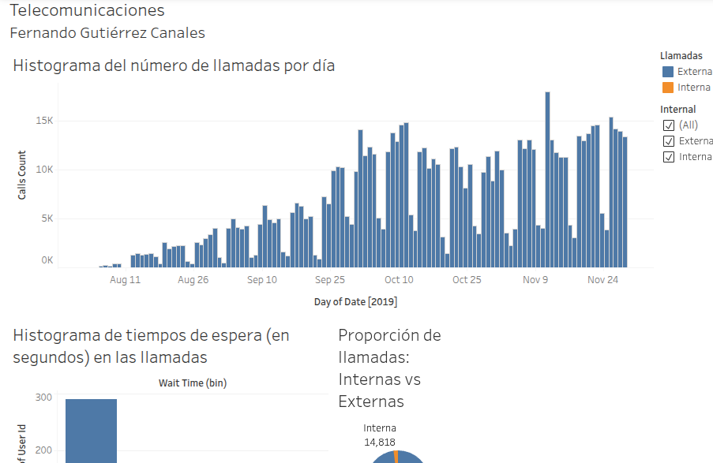

Data Analyst & Python Developer | PhD in Astrophysics
Transforming complex data into actionable business insights.
About Me
I am a Data Analyst and Python Developer with a PhD in Astrophysics. I specialize in extracting actionable business insights from massive, messy datasets using Python, advanced statistical testing, and modern data visualization tools.
During my recently completed PhD between the Paris Observatory and the Max Planck Institute, I developed mission-critical anomaly detection algorithms for the European Space Agency's PLATO space mission. This rigorous academic environment ingrained in me a deep ability to solve highly ambiguous problems, engineer robust data pipelines, and write production-ready code.
I am now bringing this analytical firepower to the corporate tech sector. Whether it is building interactive Tableau dashboards, developing open-source Python packages, or using A/B testing to optimize business operations, my focus is on building data solutions that drive measurable impact.
Data & Python Projects

Call Center Inefficiency Analysis & Hypothesis Testing
Tech Stack:PythonPandasSciPyTableau
The Challenge: Identify underperforming operators and find the root cause of declining service quality amidst a call volume spike.
The Solution: Engineered a custom inefficiency metric across 50k+ records and used T-tests to prove underperforming agents handled the same call volume as top performers. Recommended retraining over layoffs, saving HR turnover costs.
Anomaly Detection Pipeline for ESA's PLATO Mission
Tech Stack:PythonData PipelinesSignal Processing
The Challenge: The ESA's PLATO mission required an on-board, reliable method to filter false planetary transits out of massive streams of photometric sensor data.
The Solution: Engineered and validated a robust anomaly detection algorithm that was officially adopted into the mission's data pipeline to ensure downstream data integrity. Resulted in a first-author publication.
The Challenge: Non-technical stakeholders needed a user-friendly way to explore and extract business insights from a complex dataset of US automobile sales.
The Solution: Developed and deployed an interactive web application empowering users to perform real-time Exploratory Data Analysis (EDA) through dynamic filtering and automated data visualizations.
The Challenge: Astronomers needed a lightweight tool to evaluate if specific planetary bodies meet the signal-to-noise detection thresholds of the PLATO mission.
The Solution: Developed and published a fully documented, open-source Python package to PyPI, allowing researchers to calculate transit depths and assess detectability via a simple pip install.
Before transitioning to corporate data analytics, my academic career was dedicated to the European Space Agency's PLATO mission and the study of extrasolar planets. My research focused on developing data pipelines to model protoplanetary disks, characterize Ultra Short Period (USP) planets, and build correction algorithms to filter false positives out of complex photometric light curves.
Selected Publications
(Published under Fernando Gutiérrez-Canales / C.F. Gutiérrez-Canales)
Detecting False Positives with PLATO using double-aperture photometry and centroid shifts Published in A&A (2026)
The young HD 73583 (TOI-560) planetary system: two 10-M⊕ mini-Neptunes transiting a 500-My-old, bright and active K dwarf Published in MNRAS (2022)
Interpretation of Optical and IR Light Curves for Transitional Disk Candidates in NGC 2264 Using the Extincted Stellar Radiation... Published in RMxAA (2021)
TESS Re-observes the Young Multi-planet System TOI-451: Refined Ephemeris and Activity Evolution Published in RNAAS (2021)
Teoría Atómica y Realismo Científico Published in RMF-E